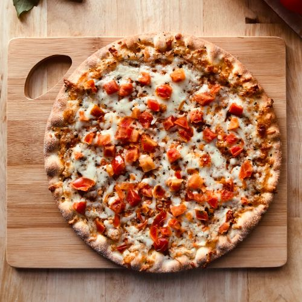

Pizza

Description
Homemade pizza! If your toppings are vegan, this recipe is vegan. Dried herbs are best for the sauce, but you can use fresh as a topping.
There's no measurements in the recipe, so you'll need to eyeball it. The dough will become less wet as you knead it, and it should be slightly sticky when you leave it to rise. Leftover dough and sauce can both be frozen and reused.
Ingredients
For the dough
- Yeast
- Plain flour
- Water
- Salt
For the sauce
- Can of tomatoes
- Oregano
- Basil
- Thyme
- Onion powder
- Garlic powder
- Smoked paprika
- Salt
And your toppings of choice. I recommend artichokes, olives, capers and vegan mozarella.
Steps
- Mix yeast, dry flour and salt together, then add water gradually until you can knead the mixture.
- Knead until thoroughly combined. The dough should be slightly sticky. No need to knead excessively, the more the dough is kneaded the more it will expand.
- Put the dough into a bowl and cover with a damp tea towel. Leave at room temperature for 2-6+ hours or overnight in the fridge. The dough should roughly double in size.
- Form the dough into a ball and leave to rest under a damp towel on the working surface. Prepare the toppings and preheat the oven to the highest temperature.
- To make the sauce, mix the can of tomatoes with the herbs and salt to taste. The seasoning should be stronger than usual, as no seasoning was added to the base or toppings.
- Oil a baking tray and spread out the dough as thinly as possible while avoiding holes. Be careful to avoid leaving the dough spread out for too long or it will start to rise and create air bubbles.
- Add the sauce, then the other toppings and bake the pizza at a high temperature for roughly 10 minutes, or until the toppings look cooked and the crust is starting to brown.
Back to Homepage